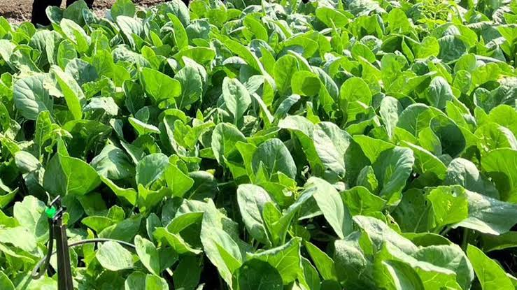

ปลูกผักอย่างไรให้ได้ผลดี
เคล็ดลับการดูแลพืชผักสวนครัวอย่างถูกวิธี เพื่อให้ได้ผักใบเขียวสด ผลผลิตดก และโตไวทันใจ

คะน้า – ผักใบเขียวปลูกง่าย ทนทานคะน้า
ผักใบเขียวที่ปลูกง่าย ทนทาน ให้ผลผลิตดี ปลูกได้ตลอดปี แต่เจริญเติบโตดีที่สุดในช่วงอากาศเย็น
- อายุเก็บเกี่ยว ประมาณ 45–60 วัน
- ฤดูที่เหมาะ ฤดูหนาว
- ระยะปลูก 20–30 ซม.
- การให้น้ำ เช้า–เย็น ให้ดินชุ่ม
เคล็ดลับการปลูกผัก
เลือกพื้นที่
เลือกที่โล่งแจ้ง ได้รับแสงแดดอย่างน้อย 5–6 ชั่วโมงต่อวัน และใกล้แหล่งน้ำ
เตรียมดิน
พรวนดินให้ร่วนซุย ผสมปุ๋ยคอกหรือปุ๋ยหมัก และยกแปลงให้น้ำไม่ท่วมขัง
ให้น้ำ
รดน้ำช่วงเช้าและเย็น ให้ดินชุ่มแต่ไม่แฉะ เพื่อลดการเกิดโรครากเน่า
ดูแลรักษา
ถอนวัชพืช ตรวจแมลงสม่ำเสมอ และเสริมปุ๋ยตามช่วงการเจริญเติบโต